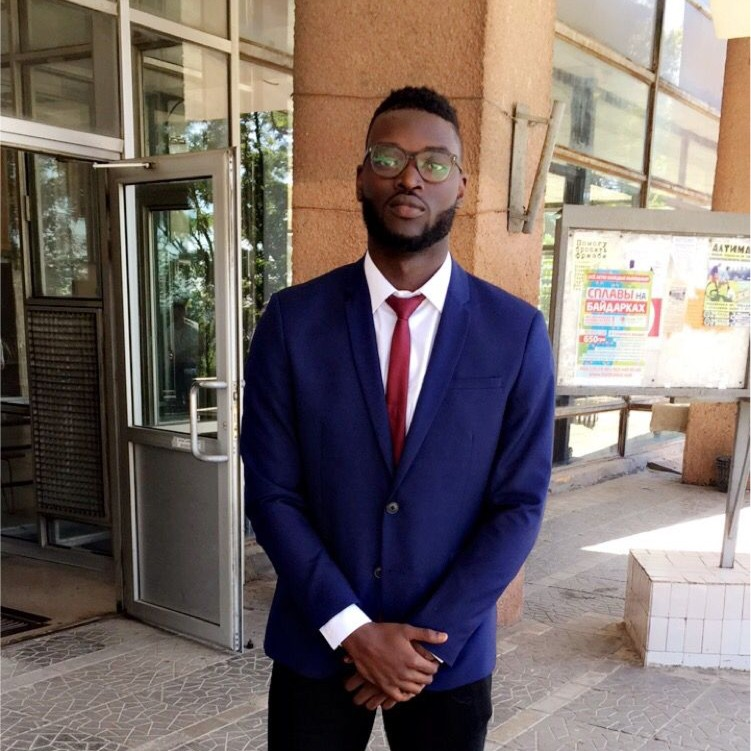

Chinonso Unyimadu

Summary
I have one year experience in the web development field, working on a diverse range of projects, from e-commerce websites to content management systems and custom web applications. My portfolio showcases my dedication to quality and innovation.
Let's Collaborate:
I'm always excited about new opportunities to collaborate and bring creative web solutions to life. Whether you have a specific project in mind or need guidance on enhancing your online presence, feel free to get in touch. Let's work together to make your web development dreams a reality!
Feel free to personalize this brief according to your specific experiences, skills, and preferences as a web developer.
Qualifications
- M.Eng Mechanical Engineering
National Technical University
Kharkiv, Ukraine
- B.Eng Mechanical Engineering
National Technical University
Kharkiv, Ukraine
Work Experience
- Resourcery PLC - Project Engineer
Lagos, Nigeria • 09/2022 - Current
Skills
- Front-End Development: I specialize in creating stunning and responsive user interfaces using HTML, CSS, and JavaScript. My keen eye for design ensures that every website I build is both aesthetically pleasing and user-friendly.
- Back-End Development: I have a solid understanding of server-side technologies and databases, allowing me to develop robust and secure web applications. I'm proficient in languages like PHP, Python, Ruby, and have experience with popular frameworks like Django and Ruby on Rails.
- Full-Stack Proficiency: I'm comfortable working on both the front-end and back-end, which enables me to provide end-to-end solutions for web projects, ensuring seamless integration and functionality.
- Responsive Design: I prioritize creating websites that adapt flawlessly to various screen sizes and devices, ensuring a consistent and enjoyable experience for all users.
- Performance Optimization: I'm dedicated to optimizing website speed and performance, employing techniques such as code minification, lazy loading, and caching to achieve lightning-fast load times.
Personal Section
Contact Me